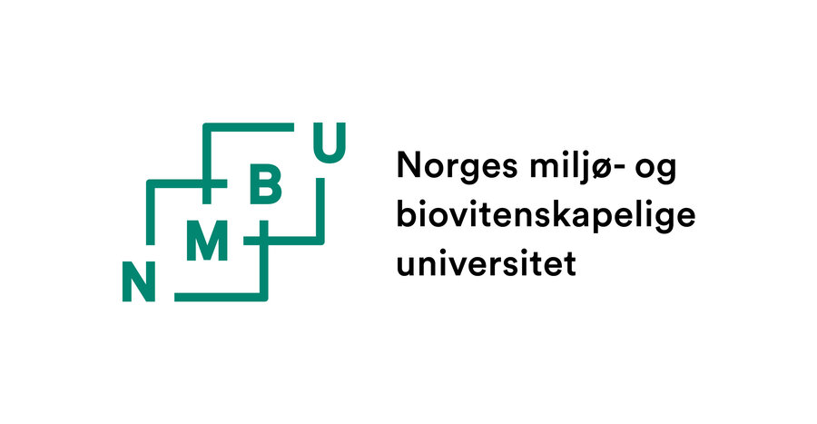
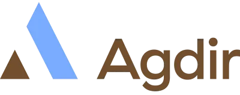
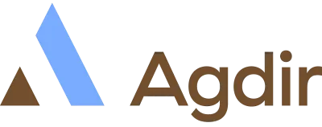
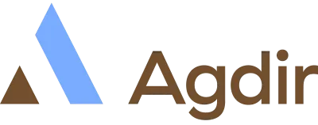
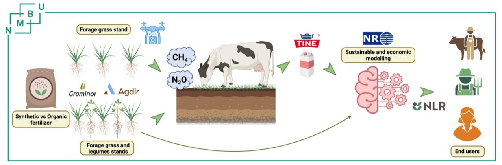

Soil2Milk
Bærekraft gjennom jord → fôr → melk-kjeden (jan 2026 – jan 2030)
Vert: NMBU
Prosjektleder (PI): Mallikarjuna Rao Kovi
Finansiering: Forskningsrådet (KSP) og FFL/JA-midler
Totalbudsjett: 17,04 millioner NOK (2026–2030)
Sammendrag
Soil2Milk forbedrer nitrogenutnyttelse (NUE) og reduserer klimagassutslipp ved å kombinere gras–belgvekstblandinger (med Lotus corniculatus), CRISPR‑baserte mål for NUE, kuforsøk for metanproduksjon og -intensitet, samt gårdsmodellering (HolosNor) forbedret med maskinlæring og feltdata.
Mål
- Kvantifisere N₂O‑utslipp og N‑fiksering i gras–belgvekstsystemer under ulike gjødslingsstrategier.
- Identifisere høy‑NUE raigrasaksessjoner og CRISPR‑mål støttet av sensor‑ og UAV‑fenotyping.
- Vurdere metanintensitet og NUE‑effekter fra forbedret fôrkvalitet hos melkekyr.
- Oppdatere HolosNor‑modellen med maskinlæring og prosjektdata for gårdssimuleringer.
Partnere og finansieringskilder



 




Finansiert av Forskningsrådet (KSP‑programmet) og Forskningsmidlene for jordbruk og matindustri (FFL/JA). © 2025 NMBU • Soil2Milk‑prosjektet.
Figur 1 – Prosjektoversikt

Konseptuell flyt for jord → fôr → melk‑systemet og dataintegrasjon gjennom maskinlæringsmodeller.